無液氣壓計
↑無液氣壓計在密封盒內，打開抽氣機，看看指針的變化。
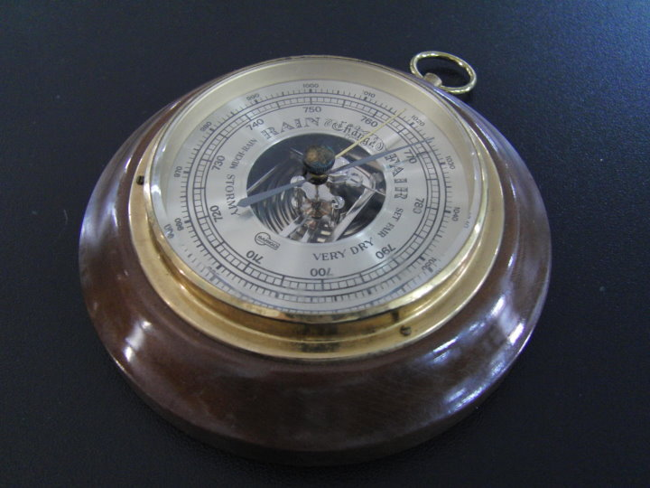
↑在實驗室裡找到寶物，〝無液氣壓計〞，顧名思義是裡面不用水銀的氣壓計。
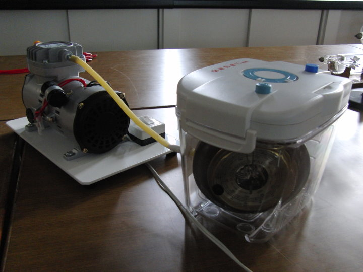
↑裝進密封盒裡，接上抽氣機，看看有什麼變化。(見影片)
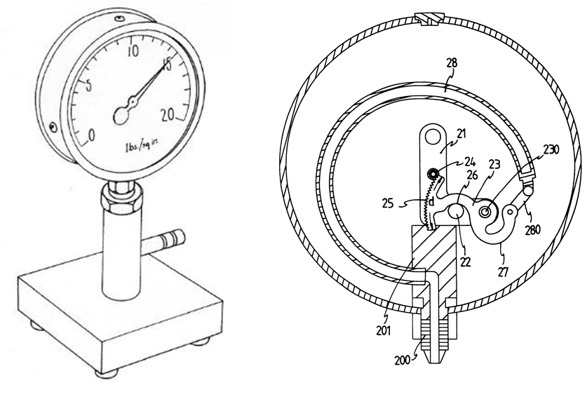
↑據說內部的原理是這樣。

↑那當然要拆開才會知道囉！
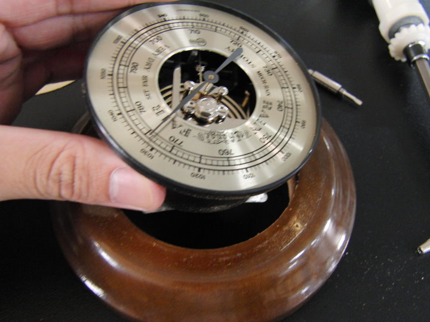
↑機身與木框分離。
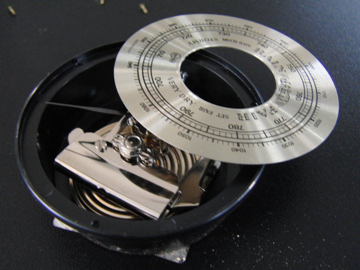
↑拆下表面，看到內部的機芯。
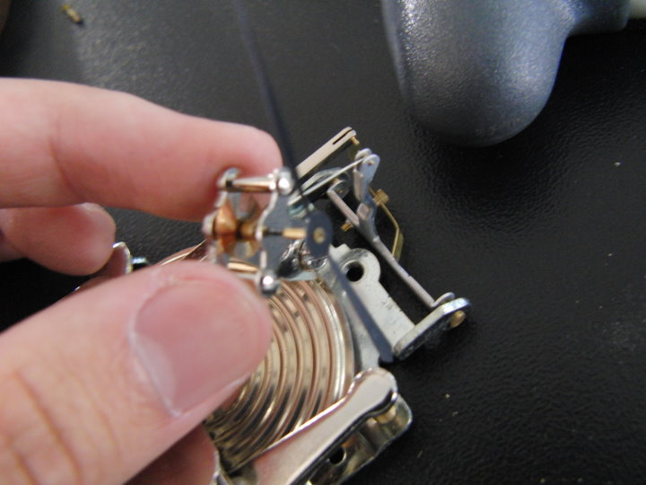
↑機芯與指針，很難對焦，沒拍清楚拉動指針的螺旋彈簧。
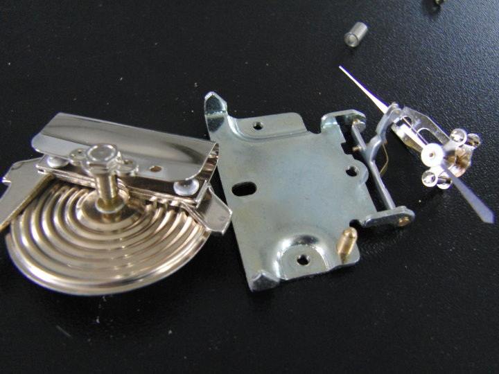
↑最主要的零件，由左而右：金屬膜盒，支架，指針。
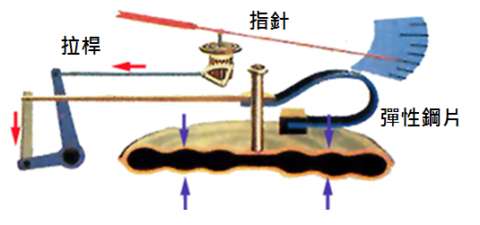
↑原來結構比較像這樣。
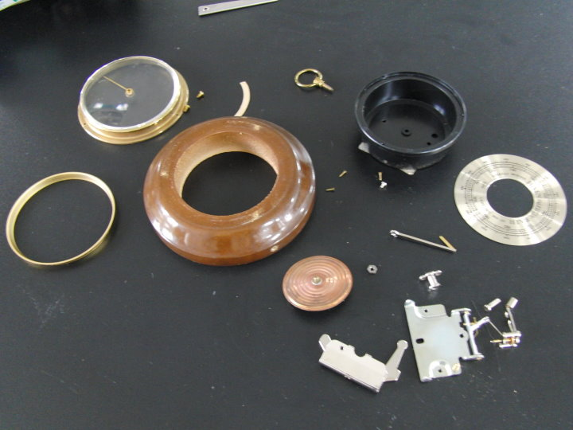
↑拆完的 屍體 零件大合照。
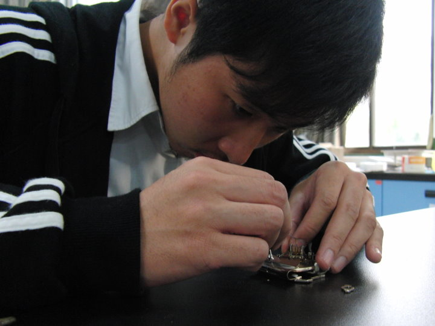
↑要會拆也要會裝，趕快把它裝回去。
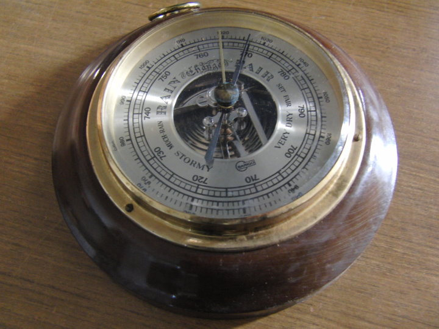
↑完成，像新的一樣，還是可以正常使用喔。
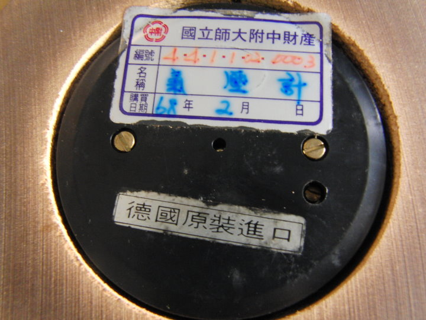
↑氣壓計背面的財產標籤，民國68年2月，我都還沒出生呢！
本頁照片、影片由師大附中1268班 郭彥佐、張脩耀 拍攝。
由 郭彥佐 進行氣壓計的拆解與組裝。